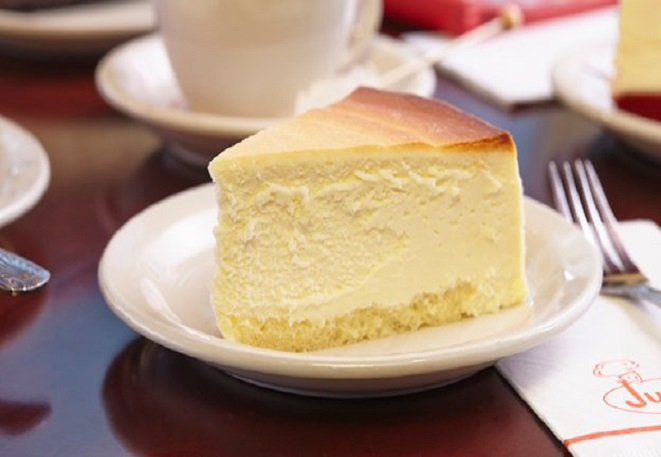

HOT DOG
타임스퀘어의 푸드 카트에서부터 브루클린까지 핫도그는 유욕 어디에서든 쉡게 만날 수 있는 음식이다. 롤빵과 따뜻한 물에 데워진 소시지 한줄을 덜렁 접어주는 것이 무성의하게 느껴지지만, 한국에서 바쁠 때 김밥 한 줄을 손에 쥐고 먹는 것과 비슷하다. 핫도그에 여러가지 토핑을 넣어 더 푸짐한 맛을 볼 수 있는 다양한 식당도 많다.
CHEESECAKE
뉴욕을 상징하는 디저트로 가장 유명한 것은 치즈케이크이다. 두툼한 사이즈의 치즈케이크는 진하고 부드러운 맛 때문에 많은 사랑을 받고 있다. 일반적인 치즈케이크는 미국의 식미닞 시대부터 시작되었지만 현재의 두툼한 크기의 치즈케이크는 생겨난지 그리 오래되지 않았다.

EGGS BENEDICT
조심스럽게 조리해낸 달걀을 포크로 톡 치면 흘러내리는 달걀 노른자와 그 위로 올려낸 황금색 홀렌다이즈 소스와의 조화가 좋은 음식이다. 조그마한 잉글리쉬 머핀 위에 캐내디언 햄이나 훈제 연어를 곁들어 맛을 더하기도 한다. 1890년 뉴욕의 왈도프 호텔에서 처음 생겨난 음식이다.
HAMBURGER
뉴욕은 햄버거의 동네이다. 셰이크 셱의 고향이기도 한 뉴욕에서는 다양한 브랜드의 햄버거를 맛볼 수 있다. 서부에서 건너온 우마이 버거, 로컬 재룡로 만드는 베어 버거, 블랙 아이언 버거 등 최고의 햄버거들이 즐비하다. 최근에 뉴욕에선 푸아그라나 트러플 소금을 첨가한 버거부터 라면 면발을 활용한 버거 등 다양한 시도가 있다.